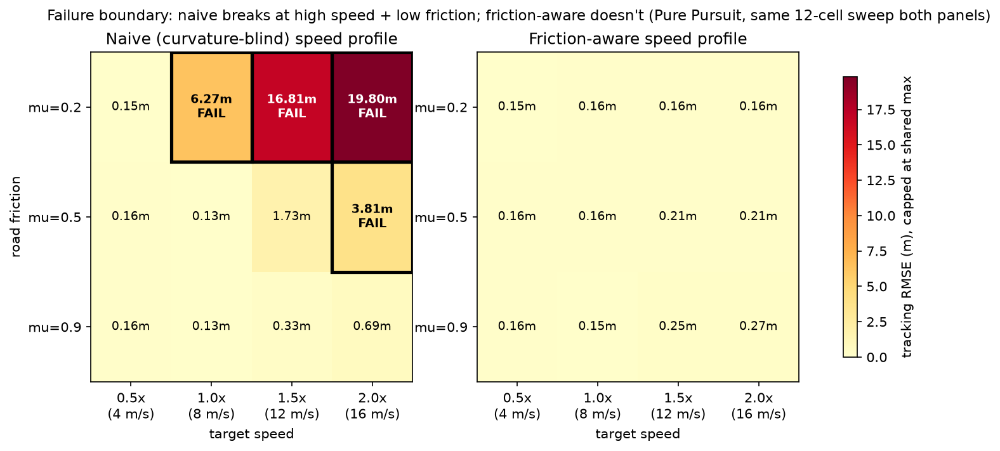
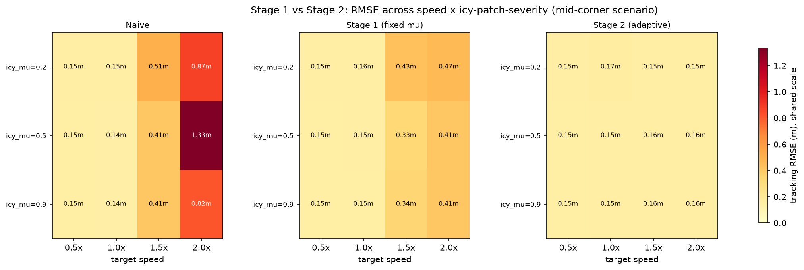

Friction-Aware Motion Planning for Autonomous Vehicles
A planning-and-tracking stack that plans in a kinematic model (like most planning stacks do), deliberately exposes the tracking failure that this assumption causes at speed or on low-friction road, fixes it by constraining the planned speed to the vehicle's tire-friction circle, then goes one step further and estimates that friction live while driving.
Same path, same vehicle, same hardest case in the test sweep (2.0x nominal speed, icy road, mu=0.2, Pure Pursuit controller).
Why this project
Most motion-planning tutorials use a kinematic bicycle model: give it a steering angle and a speed, and it assumes the car follows the path exactly. That's fine at low speed on dry pavement. It breaks once speed goes up or the road gets slippery, because the tires can't actually generate the lateral force the path is asking for — and a kinematic model has no way to know that in advance. This is the gap between how most planning stacks reason and how a real vehicle actually behaves, and it's exactly where my vehicle-dynamics background (FSAE suspension, CarSim/BikeSim, tire-limited handling) turns into something directly useful in software.
I built a normal plan-and-track pipeline first, showed where the kinematic assumption breaks, then fixed it by limiting the planned speed to what the tire's friction circle can actually deliver. After that I went one step further: instead of assuming road friction is known ahead of time, I added an Extended Kalman Filter that estimates it live while the car is driving, on a road that changes surface mid-corner.
Stage 1 — plan and fix, with known friction
Planning: Hybrid-A* over kinematically-feasible motion
primitives produces the geometric path through an ISO 3888-2-style
double-lane-change corridor.
Speed profile — the core comparison: two strategies over the
same path — a curvature-blind trapezoidal ramp (naive, a deliberate strawman)
vs. v_max(s) = sqrt(mu·g·R(s)) from path curvature, forward/backward-
integrated under accel and brake limits (friction-aware).
Ground truth: a dynamic bicycle model with a linear tire model,
saturated at a per-axle friction-circle bound, is what the simulator actually
steps — the planner and every controller only ever reason in the simpler
kinematic picture, so any gap between the two shows up as real tracking error,
not a self-consistent fiction.
Controllers: Pure Pursuit, Stanley, and a linear MPC, so the
result isn't an artifact of one control law.

Across a 72-run sweep ({naive, friction-aware} × {Pure Pursuit, Stanley, MPC} × 4 speeds × 3 friction levels): naive succeeds 22/36, up to 20.37m RMSE when it fails; friction-aware succeeds 36/36, staying in a tight 0.13–0.34m RMSE band. The same behavior reproduces live over ROS2 and RViz, not just offline.
Stage 2 — estimating friction live
Stage 1 still assumes something a real vehicle doesn't get for free: that road friction is known in advance. Stage 2 drops that assumption. A simulated noisy IMU (lateral acceleration, yaw rate) feeds an Extended Kalman Filter that estimates road friction and vehicle sideslip live; a curvature-gated, window-smoothed trigger replans the remaining speed profile when the estimate drifts from the plan; and Pure Pursuit/Stanley get a sideslip-compensated steering term. Tested on a scenario where the road itself turns to ice mid-corner.

| Mean RMSE | Std across 12 conditions | |
|---|---|---|
| Naive | 0.44 m | 0.37 m |
| Stage 1 (fixed mu, wrong on ice) | 0.27 m | 0.13 m |
| Stage 2 (EKF-adaptive) | 0.15 m | 0.004 m |
Given a sudden step in true road mu (0.9 → 0.2, simulating hitting ice),
mu_hat tracks it to within 0.015 in about 0.02s — well inside the
0.3s target I set. Live over ROS2, the same pattern holds: all 7 nodes start
clean, 2 replans trigger as the vehicle enters the icy patch, and
mu_hat corrects from the initial 0.9 assumption down to ~0.3–0.46.
Real problems I hit building this
These aren't written up after the fact to sound impressive — I only caught them by testing across seeds and on purpose-broken cases, not on the first run that happened to look fine.
- EKF observability collapse: the filter can only estimate friction while the tire is actually saturated at its current belief about friction. If that belief drifts to an unsaturated value, the measurement stops carrying information about it and the estimate can get stuck — wrong, with no error shown anywhere. I only caught this running the filter across 9 random seeds (5 failed, though the first one looked perfect); fixed with a leak term pulling the estimate back toward a prior over time.
- Braking wasn't friction-limited: the friction-circle constraint only applied to cornering — the speed controller could still ask for more braking force than the tires could deliver on ice. Found by plotting commanded acceleration directly against the friction circle. Fixing it made the naive baseline's worst-case RMSE roughly quintuple (3.64m → 19.80m) — the correct result, not a regression, since a speed profile that assumes highway-grip braking simply can't stop the vehicle in time on ice.
- Four separate bugs to get MPC working: an unstable forward-Euler discretization at highway-speed linearization values, a sign error in the cross-track term that made it diverge instead of converge, a low-speed clip floor set too low, and a genuinely infeasible QP during a hard slide that needed a fallback instead of a crash.
Limitations
- Linear tire model (clamped at the friction circle), not a full nonlinear Pacejka model.
- Single scenario — one double-lane-change corridor; Stage 2 varies the friction along it, not the track geometry.
- Stage 2's estimator is IMU-only, no wheel-encoder fusion (a deliberate scope choice).
- Everything here is simulation — no real or scaled hardware platform yet.
Full write-up, all figures, and the 72-run / 36-run sweep data are in the
repo's docs/RESULTS.md.